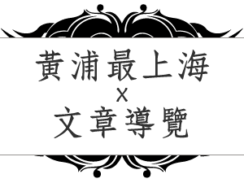
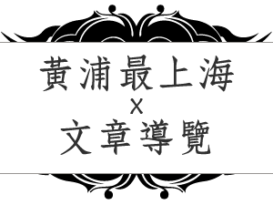

到上海旅遊，總要吃個上海菜，才顯得不枉此行。這回本貓到了上海，當然要找一間老字號的上海菜好好品味一番。
「本幫菜」乃相對於「外幫菜」，「外幫菜」是指各省移民帶入上海的菜。「本幫菜」則是傳統上海菜，特色是「濃油赤醬、重糖豔色」，也就是冰糖、醋、醬油都用得重，多用煨、燉、悶等調理方式，吃起來偏甜偏鹹，口味挺重。
「油爆鮮河蝦」是本幫菜代表之一，河蝦的體型本就不大，但「老飯店」挑選的貨色新鮮又肥美，以高溫油爆炸的鮮酥，整隻都可吞下肚。調味上有刻意降低甜度，外觀仍是「豔色」，但吃起來不會過甜。
「金牌八寶鴨」是「上海老飯店」發明的代表菜色，是將鴨子從翅下剖開取出內臟，填入糯米、蓮子、火腿、開洋、冬菇、栗子等好料一起籠蒸，再以特製醬汁調理。上桌後將鴨子剖開，鴨肉軟爛，糯米等內餡香味四溢，加上湯汁，吃起來像粽子也像米糕。
「上海老飯店」牌子老、地點好、菜色多、環境好。有些菜色刻意改變了傳統上海菜「濃油赤醬、重糖豔色」的重口味，但也可能更適合台灣人的口味。
上海老飯店就在豫園商圈內，來豫園記得來裡嚐嚐道地本幫菜。

 
